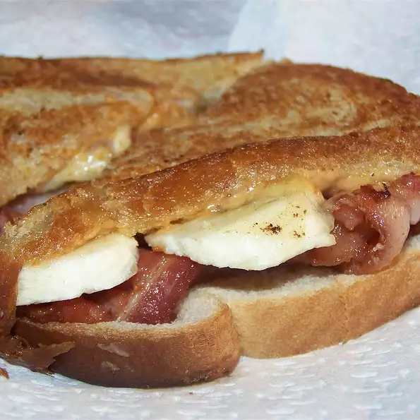

Recipe for an Elvis Sandwich

This sandwich may sound unappealing, but it's
actually very tasty, especially on cold winter
days! Legend has it that this was a favorite
of The King.
Ingredients
- 3 tablespoons peanut butter
- 2 slices white bread
- 1 banana, peeled and sliced
- 3 slices cooked bacon
- 1½ teaspoons butter
Directions
- Spread the peanut butter on one side of one slice of bread. Top with sliced banana, then slices of cooked bacon. Cover with the other slice of bread. Spread butter on the outside of the sandwich.
- Heat a skillet over medium heat. Fry the sandwich on each side until golden brown and peanut butter is melted, about 4 minutes total.
Nutrition Facts
Per Serving: 579 calories; protein 17.4g; carbohydrates 61.8g; fat 32.7g; cholesterol 16.1mg; sodium 608.8mg.